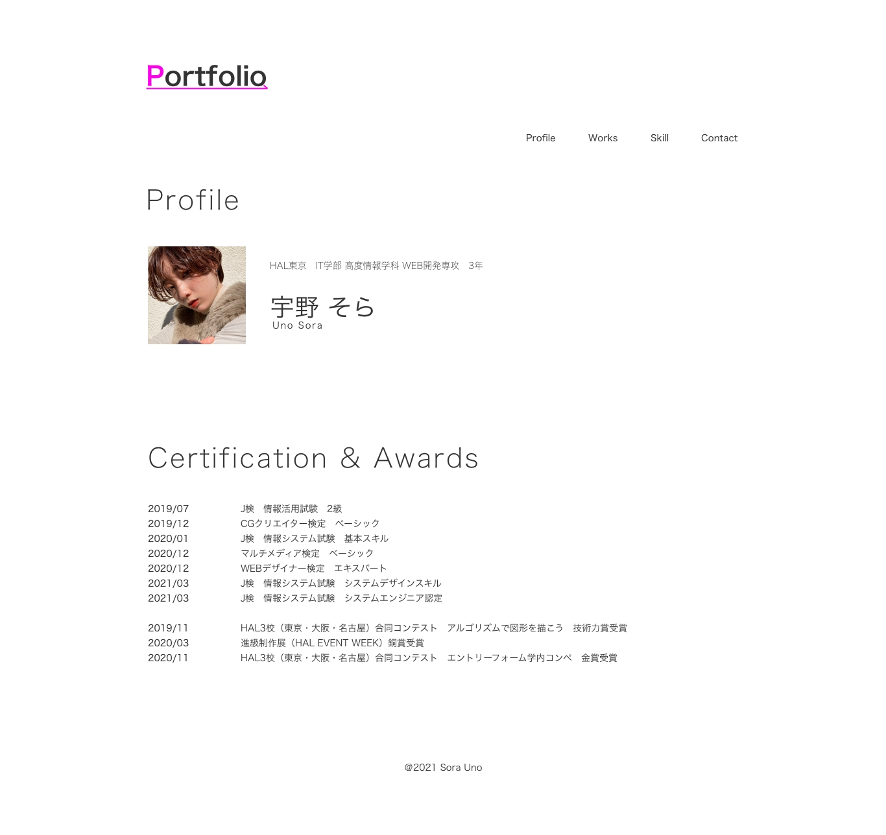
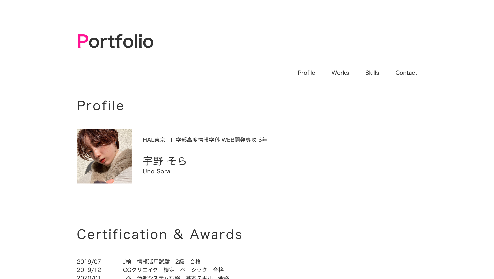
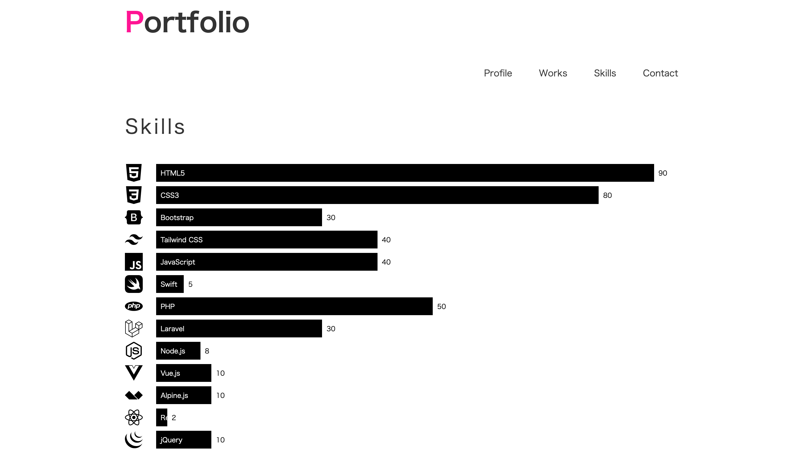

ー Webサイトデザイン+コーディング
ポートフォリオサイト
WEBサイトデザイン
+コーディング
使用ツール
AdobeXD
製作期間
3週間（当作品詳細ページ以外）
＋2週間（当作品詳細ページ）
使用言語
HTML
CSS
JavaScript
Alpine.js
tailwindcss
担当箇所
リサーチ
デザインカンプ作成
コーディング

制作背景
授業内課題にて、「自分のプロフィールページを作成する」といった課題が課され、
この機会にプロフィールだけでなく、作品も掲載したポートフォリオサイトを作ろうと思ったから。
制作における課題
- ・課題の条件はプロフィールページの作成とCSSアニメーション、Alpine.js、tailwindCSSの使用。
- ・自分を紹介し、自分らしさを表現できるサイトデザイン
- ・作品の魅力を最大限伝えられるサイトデザイン
- ・おしゃれなイメージのデザインにしたい
課題解決のためのリサーチ
①リサーチ
- ・他の人のポートフォリオサイトを調査
- ・ポートフォリオサイトに掲載すべき内容を調査
- ・自分らしいデザインについて思考
- ・このサイトを見る人は誰なのか調査
②リサーチをもとに分析
- ・ポートフォリオサイトはシンプルなものが多い
- ・作品などのコンテンツに注目させるデザインが必要
- ・自身の真面目な性格や、活発な部分を表したい
- ・作品詳細ページでは作品をストーリーで見せると良く、細かい情報も多く載せると良い
- ・ポートフォリオ全体は自身の紹介で、作品詳細ページは作品の紹介である
- ・使用経験のある言語がわかりやすいと良い
③行動
- ・モノクロを基調としたシンプルなデザイン
- ・ポートフォリオ全体は角を意識し、商品詳細ページでは丸も使用
- ・使用経験のある言語はグラフ表示
- ・必要な情報へすぐ辿り着けるようにナビゲーションを設置
- ・飽きさせないために要所要所にアニメーションを使用

ー コンセプト ー
私自身について、作品に取り組む姿勢、作品の工夫点を伝えられるポートフォリオサイト
ー ターゲット ー
採用ご担当者様
作品の工夫点

①「私」を伝えるデザイン
- ・ポートフォリオ全体のデザインは角を使ったデザインで自身の真面目な性格を表現
- ・PortfolioのPを鮮やかなピンクにし、自身の活発で行動力のあるところを表現
- ・ここでの写真は証明写真ではなく、素の私が伝わるようなプライペート写真を使用
- ・作品詳細ページでは、柔軟なデザインができることをアピールする為に、角のない柔らかなデザインを使用
②見る人を意識したデザイン
- ・必要な情報へ早く辿り着ける見やすくシンプルなデザイン
- ・多くの就活生を見ていることを想定し、要所要所にアニメーションをつけて飽きないよう工夫した

③直感でわかりやすい技術スキル一覧
- ・直感でわかりやすいようにグラフ表示
- ・グラフはAlpine.jsを使用し、入力数値に合わせグラフ幅が変更するようになっているため運用しやすい
④作品詳細ページはなるべく詳細に
- ・詳細な情報をストーリー仕立てでわかりやすく紹介
- ・実際のサイトへのリンクをヘッダーとフッターに用意し、より詳細に見ていただく工夫をした
良かった点
- ・課題のプロフィールページのみならず、これを機に求められる以上のポートフォリオを作成できたこと
- ・リサーチにしっかり時間をかけられたこと
- ・リサーチ結果を作品に落とし込み、活かすことができたこと
- ・先生から課題における最高評価を頂けたこと
- ・自分で満足できるクオリティのものを期限内に提出できたこと
反省点
- ・作品詳細ページ作成に予想よりも時間をかけてしまった
- ・作品詳細情報が多いため、作品を追加する際にかなり時間がかかる
- ・tailwindCSSのカスタマイズができない部分があった